What monster energy drink version/flavor would you like to know?
MONSTER ENERGY DRINK INFORMATIONS
STORE
ABOUT US
CONTACT US
In this page you are able to see all the monster drinks and their informations below, There are five diffent versions of monster energy drinks, these are original monster energy drink,
monster ultra: zero sugar energy drink, monster coffee + energy drink, monster juice + energy drink, monster tea + energy drink. Under those five different versions monster energy drinks provides very different flavors.
Unleash The beast!
5 Different Versions of Monster Energy Drink
ORIGINAL MONSTER ENERGY DRINKS.
MONSTER ENERGY ORIGINAL GREEN "OG"

Tear into a can of the meanest energy drink on the planet—Monster Energy. It packs a powerful punch but goes down smooth with its easy-drinking flavor. It’s the ideal combo of the right ingredients
in the right proportions to deliver the big bad buzz only Monster can. Unleash the Beast!
MONSTER ENERGY ZERO SUGAR
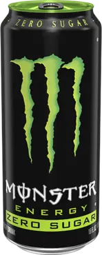
Zero sugar. 100% Monster. Making a zero-sugar drink that’s good enough to earn the Monster M ain’t easy. Same legendary taste as the original—just without the sugar.
MONSTER ENERGY STRAWBERRY SHOT
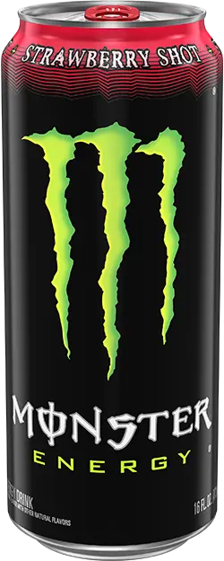
Monster Energy packs a powerful punch but has a smooth easy drinking flavor. Now with a twist - adding sweet strawberry flavor to top-off the legendary taste you know and love. 100% Monster.
With a twist.
MONSTER ENERGY ZERO SUGAR STRAWBERRY SHOT
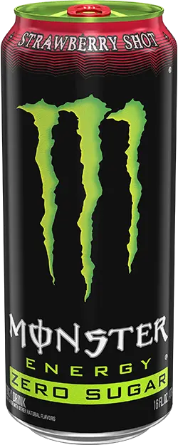
Zero sugar. 100% Monster. Now it’s next level, with the twist of sweet strawberry flavor to top off the legendary taste you know and love.
LANDO NORRIS
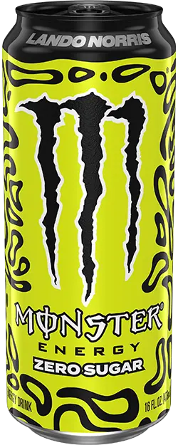
Multiple Formula 1 race winner Lando Norris spends his weekends racing 230mph spaceships, and this zero-sugar Monster drink tastes exactly how you’d imagine that feels. You’ll be won over with
the freshest of flavors, and this can is wrapped in the same iconic helmet design he races on track. It’s the taste of the future, packed into one can. Watch your back — the new era is here, and it’s tasting good.
MONSTER ENERGY ELECTRIC BLUE
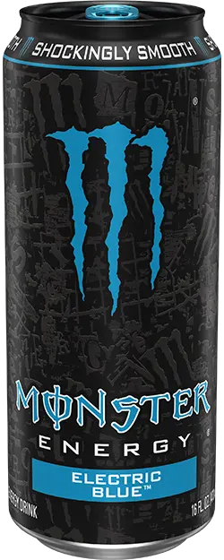
Drenched in our signature style, these cans pop with color and attitude— screaming Monster from every angle. The blue raspberry flavor is shockingly smooth. Made with real sugar and powered by
the Monster Energy blend, Electric Blue delivers bold taste and electrifying energy.
MONSTER ENERGY ORANGE DREAMSICLE
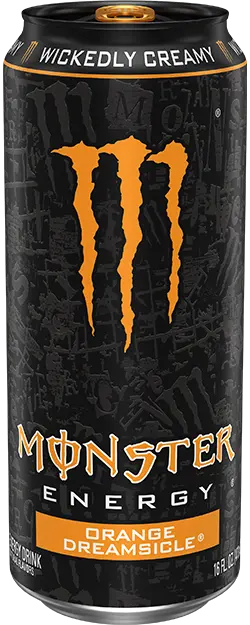
Drenched in our signature style, these cans pop with color and attitude—screaming Monster from every angle. Monster Energy Orange Dreamsicle features a wickedly creamy orange-vanilla ice cream
blend that delivers a bold, sweet energy kick you’ll love.
MONSTER ENERGY LO-CARB
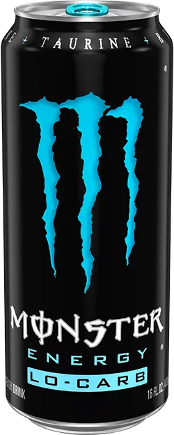
Low calories, no compromise—that’s what Lo-Carb is all about. Get the big bad buzz you love with a fraction of the calories and carbs.
MONSTER ENERGY RESERVE ORANGE DREAMSICLE
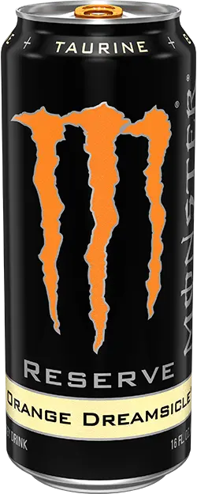
Monster Reserve is straight-up original Monster in new amazing flavors. It packs a powerful punch but delivers a smooth, easy-drinking peaches & crème flavor.
MONSTER ENERGY RESERVE PEACHES N` CREME
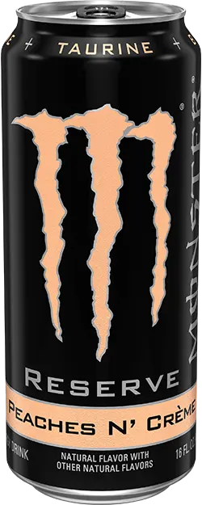
Monster Reserve is straight-up original Monster in new amazing flavors. Monster Reserve packs a powerful punch with a smooth, easy-drinking Peaches & Crème flavor.
MONSTER ENERGY NITRO SUPER DRY
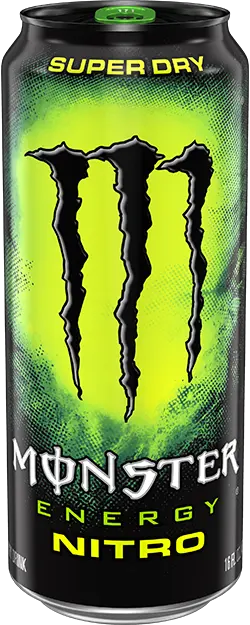
Loaded with Monster Energy’s classic blend, Super Dry is nitro-infused to create a smooth, creamy texture that is better experienced than explained.
MONSTER ENERGY SUPER-PREMIUM IMPORT
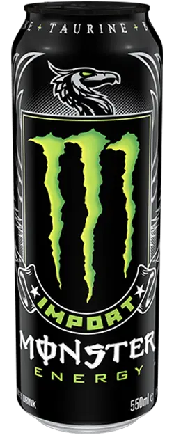
The original Monster—just a little less sweet, packed in a super-premium resealable can that delivers the same legendary Monster Energy blend. Smooth, powerful, and built for the road.
MONSTER ENERGY ZERO ULTRA DRINKS.
MONSTER ULTRA ZERO ULTRA "WHITE MONSTER"

The OG of zero-sugar energy drinks. Zero Ultra delivers light, refreshing flavor and low-calorie energy—zero sugar, full Monster. It’s the white can that started it all.
MONSTER ULTRA BLUE HAWAIIAN

Light, crisp, and super easy-drinking with a tropical tiki twist. Ultra Blue Hawaiian blends exotic Polynesian fruit flavors that are big on taste, zero sugar, and powered by the Monster Energy
blend.
MONSTER ULTRA VICE GUAVA

Ripened guava flavor with Miami swagger. Ultra Vice Guava has zero sugar, low calories, and the Monster Energy blend to fuel your fire. Bold energy for those who never blend in.
MONSTER ULTRA WILD PASSION
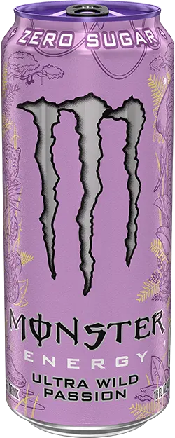
Sweet and tart passionfruit with a citrus twist. This zero-sugar, low-calorie energy drink is bright, bold, and powered by the Monster Energy signature blend.
MONSTER ULTRA FANTASY RUBY RED
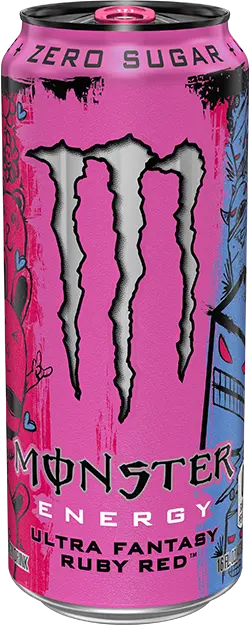
Grapefruit flavor with a citrus punch. Ultra Fantasy Ruby Red is zero sugar, bold, and built to fuel your creative chaos—energy with imagination.
MONSTER ULTRA SUNRISE

This sparkling citrus and orange flavor energy drink is zero sugar and low calorie. Crisp, light, and built for any time of day—morning or night.
MONSTER ULTRA FIESTA MANGO
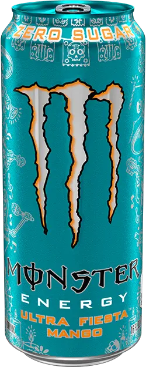
Juicy mango flavor with zero sugar and low calories. Ultra Fiesta Mango is built to keep the party going with bold tropical flavor and the Monster Energy blend.
MONSTER ULTRA ROSA
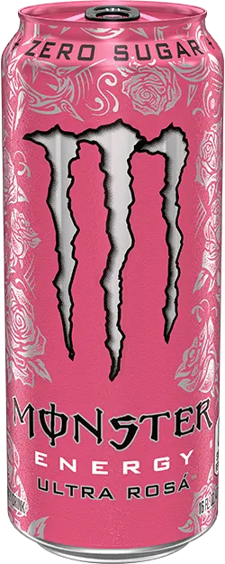
Light floral notes with a crisp finish. This zero-sugar energy drink is elegant, refreshing, and bold—charged with the Monster Energy blend for unrelenting energy.
MONSTER ULTRA RED
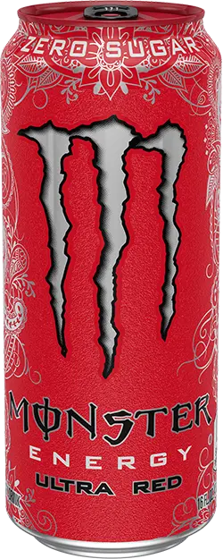
Crisp and refreshing mixed berry flavor with bold energy. Ultra Red has zero sugar, low calories, and is packed with the Monster Energy blend for pure refreshment and focused power.
MONSTER ULTRA BLUE
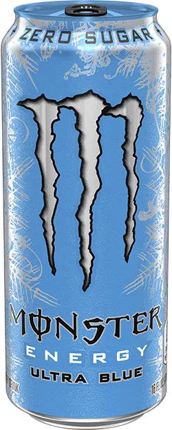
Frosty, crisp, and electric in every sip. Ultra Blue delivers that familiar blue raspberry flavor, powered by the zero sugar Monster Energy blend for clean, focused energy.
MONSTER ULTRA STRAWBERRY DREAMS
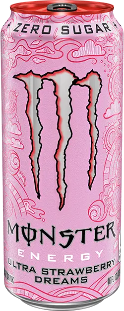
A wonderfully sweet yet slightly tart strawberry flavor with zero sugar and low calories. Smooth, dreamy, and charged with the Monster Energy blend for refreshing, focused energy.
MONSTER ULTRA WATERMELON

Refreshing watermelon flavor with zero sugar and full taste. Dive into your favorite summer treat—powered by the Monster Energy blend and made to hit year-round.
MONSTER ULTRA VIOLET
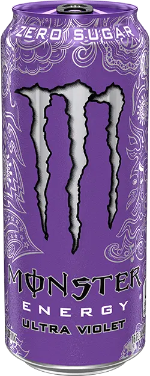
Light citrus and grape sweetness with retro purple vibes. This zero-sugar, low-calorie energy drink is crisp, smooth, and complex, powered by the Monster Energy blend.
MONSTER ULTRA PEECHY KEEN
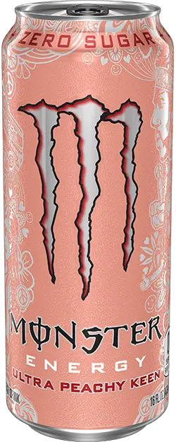
Juicy peach flavor with zero sugar and low calories. Ultra Peachy Keen delivers a sweet, smooth, and refreshing energy punch with the Monster Energy blend for a delicious boost.
MONSTER ULTRA PARADISE

Ultra Paradise delivers island flavors of kiwi, lime, and cucumber with zero sugar. This crisp, tropical energy escape is powered by the Monster Energy blend.
MONSTER ULTRA BLACK
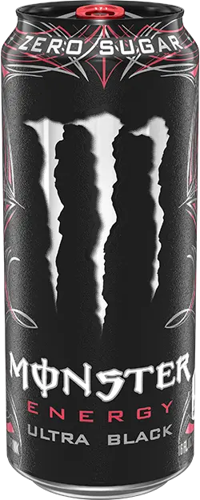
Dark cherry flavor with a smooth finish. This zero-sugar, low-calorie energy drink is elegant, bold, and powered by the Monster Energy blend for a refined energy boost.
JAVA MONSTER + KILLER BREW DRINKS
JAVA MONSTER MEAN BEAN
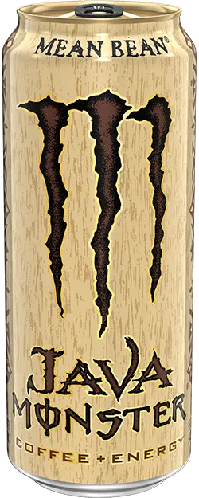
Smooth vanilla bean flavor fused with real coffee and cream. A classic coffee energy drink with bold taste and the Monster Energy blend to power your grind.
JAVA MONSTER LOCA MOCA
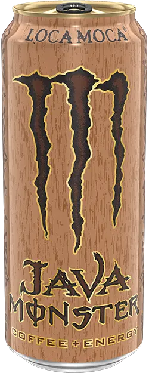
Chocolate and coffee collide in this mocha-flavored energy brew. Smooth, creamy, and supercharged with the Monster Energy blend.
JAVA MONSTER SALTED CARAMEL
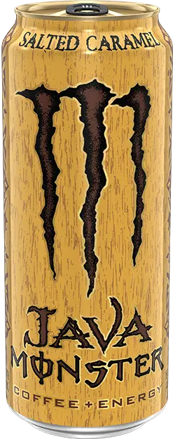
Salted caramel meets rich coffee and cream in this indulgent energy brew. Smooth, sweet, and ready to drink with Monster Energy’s loaded flavor and attitude.
JAVA MONSTER CAFE LATTE
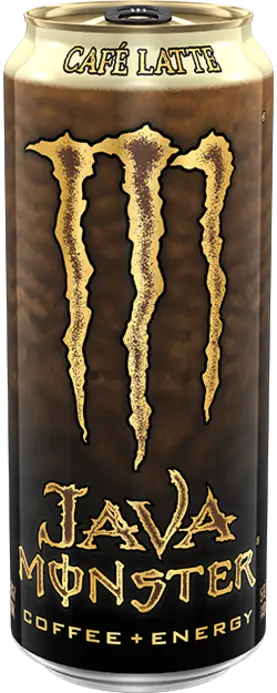
Classic café latte flavor with a creamy texture and balanced sweetness. Brewed with real coffee, cream, and the Monster Energy blend. Smooth yet savage, Java Café Latte keeps you sharp and
fueled from the first sip to the final push.
JAVA MONSTER IRISH CREME
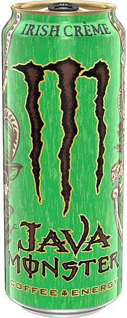
A smooth blend of Irish crème flavor and coffee. Crafted with real coffee, cream, and the classic Monster Energy blend—it’s silky, decadent, and unapologetically coffee-forward.
KILLER BREW MEAN BEAN
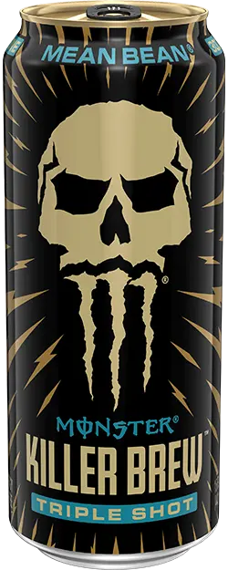
Real coffee mixed with rich vanilla bean flavor, supercharged with the Monster Energy blend. Killer Brew Mean Bean delivers bold flavor and 300mg of caffeine for those who need that extra energy
kick.
KILLER BREW LOCA MOCA
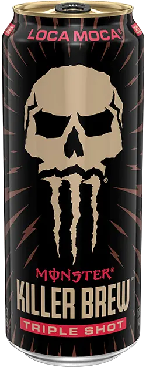
Chocolate and coffee collide in this mocha-flavored energy brew. Smooth, creamy, and supercharged with the Monster Energy blend.
JAVA MONSTER 300 FRENCH VANILLA
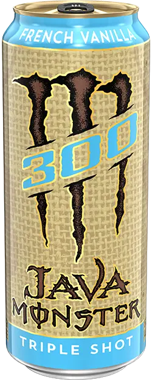
Bold coffee meets smooth vanilla flavor, supercharged with 300mg of caffeine. This high-octane brew fuels your grind with rich, creamy intensity and the Monster Energy blend.
JAVA MONSTER 300 MOCHA
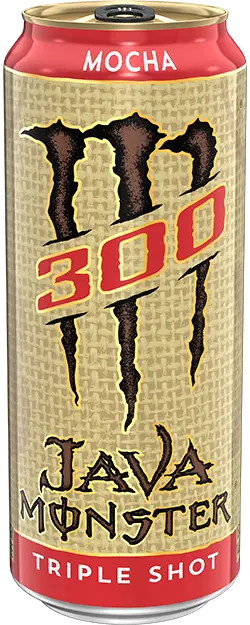
Mocha flavor with 300mg of caffeine. Real coffee and creamy cocoa come together for a bold, indulgent blast of Monster Energy power.
MONSTER ENERGY + JUICE DRINKS
JUICE MONSTER VOODOO GRAPE
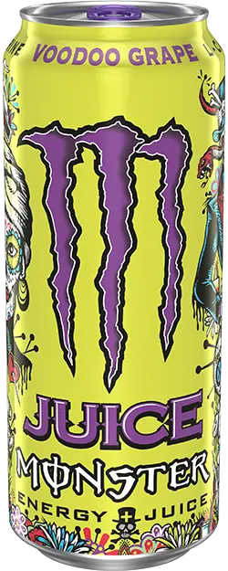
Brewed in the shadows, Juice Monster Voodoo Grape is crafted to stir your spirit with the authentic, full-bodied taste of real Concord, Niagara, and red grape juices.
JUICE MONSTER MANGO LOCO

Celebrate the dead, fuel the living. Mango Loco blends juicy mango with real fruit juice and the Monster Energy blend for a fiesta in a can—sweet, vibrant, and built to keep the party going.
JUICE MONSTER PACIFIC PUNCH
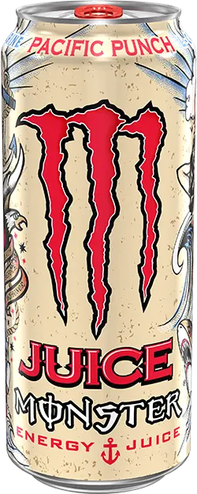
West Coast swagger in fruit punch form. Pacific Punch blends real fruit juice with bold flavor and the Monster Energy blend for a crisp, light, and unmistakably Monster experience.
JUICE MONSTER AUSSIE STYLE LEMONADE
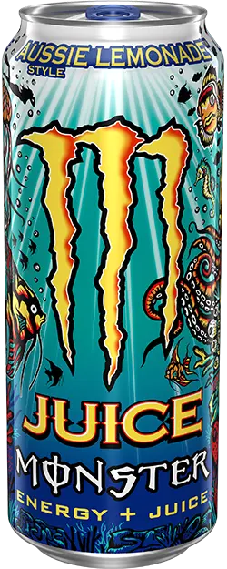
Classic lemonade with a kick of energy—straight from the Outback. Real lemonade fruit juice and the Monster Energy blend create a citrusy drink that’s crisp, refreshing, and ready for adventure.
JUICE MONSTER KHAOTIC
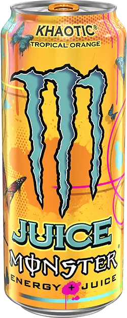
Big flavor, bigger energy. Khaotic is a tropical orange twist made with real juice and the Monster Energy blend. Designed by street legends, this can doesn’t just stand out—it shouts.
JUICE MONSTER VIKING BERRY
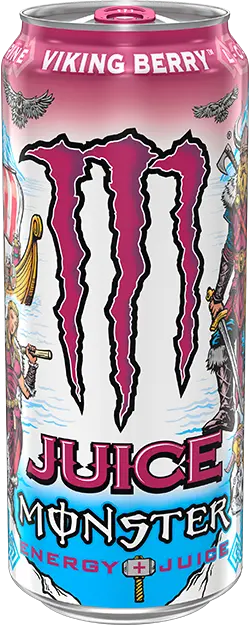
A berry-bold adventure inspired by Nordic flavors. Viking Berry blends exotic fruit juice with the Monster Energy signature blend for powerful, flavorful fuel—raise your drinks, skol!
JUICE MONSTER BAD APPLE
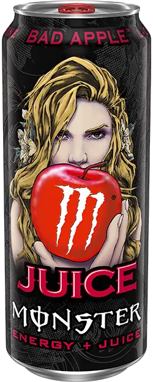
Sinfully smooth, dangerously crisp. Bad Apple delivers Fuji apple flavor with real juice and the Monster Energy blend. This isn’t your grandma’s apple juice.
JUICE MONSTER PIPELINE PUNCH

Passion fruit, orange, and guava collide in this tropical-flavored energy drink. Made with real fruit juice and the Monster Energy blend, Pipeline Punch delivers a taste of Hawaii and powerful
energy in every sip.
JUICE MONSTER RIO PUNCH

Brazilian carnival in a can. Rio Punch mixes tropical fruit flavors with a hint of spice, real fruit juice, and the Monster Energy blend for a bold, party-ready energy hit.
REHAB MONSTER TEA + ENERGY DRINKS
REHAB MONSTER TEA + LEMONADE
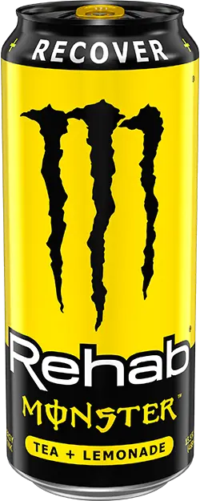
Classic lemonade meets smooth tea in this non-carbonated energy drink. With electrolytes, B-vitamins, and the Monster Energy blend, it’s a refreshing way to revive and recharge.
REHAB MONSTER GREEN TEA
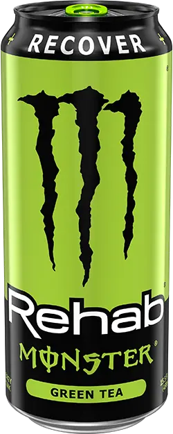
Smooth green tea flavor with serious hydration power. This non-carbonated energy drink blends electrolytes, coconut water, and an extra jolt of caffeine—refreshing, effective, and built for
recovery.
REHAB MONSTER PEACH TEA

Sweet peach tea flavor in a non-carbonated energy drink that’s smooth, hydrating, and effective. With electrolytes, B-vitamins, and the Monster Energy blend, it’s your go-to when it’s time to
recharge.
REHAB MONSTER WILD BERRY TEA

Berry-infused tea flavor, packed with hydration. This non-carbonated energy drink combines electrolytes, vitamins, and the Monster Energy blend for next-level recovery and smooth refreshment.
REHAB MONSTER STRAWBERRY LEMONADE
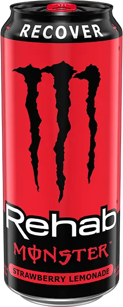
Rehab your grind with bold strawberry lemonade flavor. Packed with electrolytes, coconut water, and the Monster Energy blend, this non-carbonated beast helps you recover, refresh, and rise
again—no excuses.
->GO BACK AT THE TOP<-